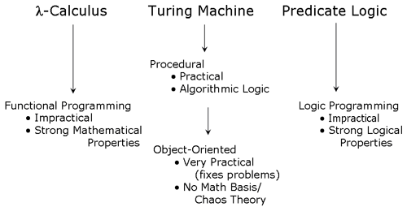

There are literally hundreds of programming languages in the world and each has its own strengths and weakness. Many are simply for teaching or language research. They are frequently limited and almost useless. There is a certain set of programming fields/categories that I believe are currently distinct enough to have an independent programming language to represent them. Each is however, narrow enough that there is no need for more than one language.
| Language Role | Best Candidate |
|---|---|
|
Scripting |
Groovy |
|
Application Development |
Java |
|
Systems Programming |
C/C++ |
|
Functional |
|
|
Logic Programming |
|
|
Functional Logic Programming |
|
Programmers often have a need for scripting capabilities. However, they need a language which is simple and complete. It must never stand in there way as is all to often the case with standard scripting languages. It must be able to easily integrate into other languages. Examples of languages that might fall into this category are Perl, Tcl, Perl, PHP, JavaScript, Rhino, Python, Jython, Ruby, JRuby, Groovy, and Better Scheme are languages for use Scripting.
Groovy is an agile dynamic language for the Java 2 Platform that has many of the features that people like so much in languages like Python, Ruby and Smalltalk, making them available to Java developers using a Java-like syntax.
To develop applications a language is needed which is complete and powerful but very safe. The complexity of large application mandates a compile time safe language. It should also be fairly high level and object oriented. The only languages which I believe comes close to this today is Java.
For the purpose of operating systems, compilers and other low level code we need a language that operates fast and just above the machine level. Of course there will always be occasion to slip into assembly but that is by its nature machine specific and so not considered here.
Both C and C++ can be used for this. They provide the low level power needed while giving a reasonable level of safety and abstraction.
Certain tasks can best be done working in a purely function environment. And these languages while not as widely used today are in many ways so distinct from others that it is important to keep there legacy alive in the hopes that they may positively influence more common languages. The only real example of this today is Haskell since languages like ML are not purely functional.
There is currently no outstanding candidate language for this category.
Logic programming (sometimes called logical programming) is a programming paradigm that is claimed to be declarative (i.e., based on mathematical logic) but this claim is controversial (see Limitations of Prolog as logic programming below).
There are two families of logic programming languages: an original sequential form Prolog and a later concurrent form.Other, more modern examples of the paradigm include Mercury, Visual Prolog, Oz, Scientific Community Metaphor, and A-Prolog.
The is currently no complete practically applied logic programming language today.
Functional logic programming aims to amalgamate the most important declarative programming paradigms, namely functional programming and logic programming. In comparison with pure functional languages, functional logic languages have more expressive power due to the availability of features like function inversion, partial data structures, existential variables, and non-deterministic search. In comparison with pure logic languages, functional logic languages have a more efficient operational behavior since functions provide for more efficient evaluation strategies (lazy evaluation, deterministic reductions) than predicates. Early research in this area has been concentrated on the definition and improvement of appropriate execution principles for functional logic languages. In recent years efficient implementations of these execution principles have been developed. You can look into a survey of this area.
In pattern languages everything is a “pattern”. Patterns make up classes and
methods, however there is no direct representation of an object. Concepts
similar similar to OO programming and functional languages like Scheme
BETA
supports the object-oriented perspective on programming and contains
comprehensive facilities for procedural and functional programming. BETA has
powerful abstraction mechanisms for supporting identification of objects,
classification and composition. BETA is a
strongly typed language like
Simula, Eiffel and C++ with most type checking being carried out at
compile-time. The abstraction mechanisms include: class, procedure, function,
coroutine, process, exception, and many more, all unified to the ultimate
abstraction mechanism: the pattern. In addition to the pattern, BETA has
subpattern, virtual pattern and pattern variable.